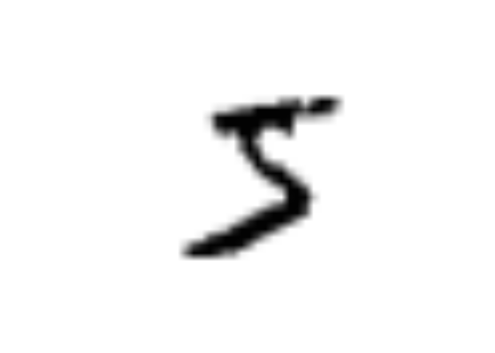
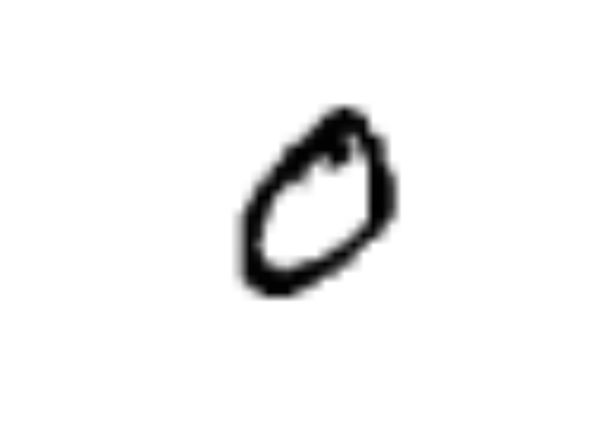

Chapter 4 Homogene Datenstrukturen
Bevor wir auf die wesentlichen Strukturen für Daten eingehen werden, wollen wir kurz grund-sätzlich auf Objekte eingehen.
4.1 Wichtige Eigenschaften von Objekten
Wie bereits gesehen, gilt laut John M. Chambers: „alles, was [in R] existiert, ist ein Objekt“. Dies trifft sowohl für Datencontainer zu wie z. B. Vektoren als auch für Funktionen oder Namen.
4.1.1 typeof()
Jedes Objekt hat in R einen zugrundeliegenden Datentyp (kurz Typ), den man mithilfe der Funktion typeof() abrufen kann:
## [1] "double"## [1] "integer"## [1] "double"## [1] "closure"## [1] "builtin"Aus der Ausgabe entnehmen wir, dass x ein integer-Vektor ist und a und z jeweils double-Vektoren sind. Wir haben gesehen, dass R keine skalaren Datentypen hat: Ein skalarer Wert wird stets dargestellt durch einen Vektor der Länge eins. Es gibt auch keinen Datentyp Vektor, sondern es gibt verschiedene Vektor-Datentypen wie integer-Vektor oder double-Vektor.
Weiterhin zeigt die Ausgabe, dass die Funktion f3() den Datentyp closure besitzt, während die Wurzelfunktion sqrt() vom Datentyp builtin ist. Zum Teil werden wir auf die einzelnen Datentypen im Verlauf dieses Skriptes näher eingehen. Neben dem Typ spielen Attribute bei Objekten eine wichtige Rolle.
Fragen:
Welchen Datentyp hat
NULL?Welchen Datentyp hat
NA?Welchen Datentyp hat
Nile?
4.1.2 length()
Neben dem Typ hat jedes Objekt in R eine Länge, die die Funktion length() zurückgibt:
## [1] 10Für manche Objekttypen wie z.B. Funktionsobjekte beinhaltet die Längeninformation allerdings keine zusätzlichen Informationen. Die Eigenschaften Typ und Länge werden oft auch „intrinsische Attribute“ genannt (R Core Team 2019, S. 13).
4.1.3 Attribute
Grundsätzlich kann jedem Objekt eine Menge von Attributen zugeordnet sein und zwar in Form einer „key-value“ Beziehung. key ist dabei stets eine Zeichenkette, wohingegen value ein beliebiger Datentyp sein kann.
Mit attributes() erhält man eine Liste aller zugeordneten Attribute.
## NULLDie Ausgabe zeigt, dass der Vektor x keine zugeordneten Attribute besitzt. Wir werden bald sehen, dass komplexere Datenstrukturen wie Matrix oder Data Frame durchaus unterschiedliche Attribute besitzen; dies sieht man auch am Datensatz Nile:
## $tsp
## [1] 1871 1970 1
##
## $class
## [1] "ts"Das Objekt Nile hat also zwei Attribute: „tsp“, das Anfangs- und Endzeit und Frequenz beschreibt, und „class“, das den Wert „ts“ hat (und für time series steht).
Wie wir später ebenfalls sehen werden, können mithilfe der Funktion attr() Attribute gesetzt und verändert werden. Einige Attribute nehmen dabei jedoch eine Sonderrolle ein (R Core Team 2019, S. 7), nämlich „class“, „comment“, „dim“, „dimnames“, „names“, „row.names“ und „tsp“. Für diese Attribute gibt es auch bestimmte Einschränkungen und in der Regel werden spezielle Funktionen bereitgestellt (wie z.B. names() oder class()), um das entsprechende Attribut zu verändern oder zu setzen.
Das Attribut „class“ spielt eine zentrale Rolle bei der objektorientierten Programmierung; es ist ein character-Vektor, der die Namen der Oberklassen enthält. Genau genommen unterstützt R unterschiedliche objektorientierte Systeme, das gebräuchlichste ist S3.
Auch wenn das class-Attribut nicht explizit gesetzt ist, dann gibt der Funktionsaufruf class() einen Wert zurück wie „matrix“, „array“, „function“ or „numeric“ oder das Resultat von
typeof().
## [1] "integer"## [1] "numeric"## [1] "function"## [1] "NULL"## [1] "ts"Kurzzusammenfassung
typeof()length()attributes()class()
4.2 (Atomic) Vector
Vektoren haben wir bereits kennengelernt. Streng genommen gibt es zwei Arten von Vektoren: atomare Vektoren und Listen. Im Folgenden meinen wir jedoch immer atomare Vektoren, wenn wir von Vektoren reden!
Ein Vektor ist wie ein Feld (array) eine Datenstruktur, die eine Folge von Elementen desselben Typs enthält, die in aufeinander folgenden Speicherbereichen abgelegt sind. Wie in C haben wir mithilfe des Indexoperators [] wahlfreien Zugriff auf die einzelnen Elemente des Vektors. Aber im Gegensatz zu C und vielen anderen Programmiersprachen beginnt die Indexierung in R nicht bei 0, sondern bei 1!
Es gibt sechs unterschiedliche Vektor-Datentypen: logical, integer, double, complex, character und raw, die den jeweils zugrundeliegenden Datentyp (d.h. den Typ eines Vektorelements) charakterisieren.
Auf raw werden wir im Folgenden nicht weiter eingehen. Im nächsten Quelltextbeispiel sehen wir Vektoren der Länge 2, die jeweils einen unterschiedlichen Vektor-Datentypen haben:
x1 <- c(T, F) # logical (entspricht booleschen Wert)
x2 <- 4:5 # integer
x3 <- c(4, 5) # double
x4 <- c(4 + 1i, 5 + 2i) # complex
x5 <- c("vier", "5") # character (entspricht einer Zeichenkette)Dabei wurden die Abkürzungen T und F für TRUE und FALSE benutzt. character bezieht sich nicht auf ein einzelnes Zeichnen, sondern stets auf eine Zeichenkette (die leer sein oder aus ein oder mehreren Zeichen bestehen kann). Zeichenketten können in R mit einfachen oder doppelten Anführungszeichen geschrieben werden. Statt c("vier", "5") hätten wir also auch c('vier','5') schreiben können. Wir werden in der Regel die doppelten Anführungszeichen benutzen, es sei denn, wir wollen eine Zeichenkette verwenden, die selbst doppelte Anführungszeichen enthält wie 'Eine Zeichenkette die "doppelte" Anführungszeichen enthält'.
Aus zum Teil historischen Gründen sind die Bezeichnungen nicht immer konsistent. Aus Kompatibilitätsgründen mit S gibt es neben typeof() auch die ähnlichen Funktionen mode() und storage.mode(), die aber zum Teil unterschiedliche Bezeichnungen zurückgeben, wie aus der folgenden Tabelle hervorgeht:
typeof |
mode |
storage.mode |
|---|---|---|
logical |
logical |
logical |
integer |
numeric |
integer |
double |
numeric |
double |
complex |
complex |
complex |
character |
character |
character |
raw |
raw |
raw |
numeric kann also sowohl für integer als auch für double stehen. Die Inkonsistenz der Bezeichnung wird auch bei str() deutlich:
## int [1:2] 4 5## num [1:2] 4 5Ein Vektor ist homogen, d.h. alle Elemente haben den gleichen zugrundeliegenden Datentyp. Was passiert aber, wenn wir versuchen, einen integer-Wert wie 3L und einen double-Wert wie 5.1 zu einem neuen Vektor zusammenzufassen?
## [1] "integer"## [1] "integer"Offensichtlich wird der „kleinere“ Datentyp in den „größeren“ Datentyp umgewandelt (coercion) und wir erhalten einen double-Vektor. Ebenso:
## [1] "character"## chr [1:4] "3.1" "1" "drei" "2+4i"4.2.1 Filter und Vektor-Indizierung
Wir haben bereits gesehen, dass durch x[n] das n-te Element im Vektor x angesprochen wird, falls n eine natürliche Zahl ist. Dies ist in R verallgemeinert worden: n kann auch ein Vektor sein, wie man aus der folgenden Tabelle entnehmen kann:
| Elemente im Vektor ansprechen | Erläuterung | Werte |
|---|---|---|
x[n] |
das n-te Element |
12 |
x[-n] |
alle, bis auf n-te Element |
3 6 9 15 18 |
x[1:n] |
die ersten n Elemente |
3 6 9 12 |
x[-(1:n)] |
alle bis auf die ersten n Elemente |
15 18 |
x[u] |
die Elemente x[u[1]], x[u[2]], x[u[3]] |
18 3 9 |
x[x > 7] |
alle Elemente größer als 7 | 9 12 15 18 |
x[x >= 3 & x <= 7] |
die Elemente zwischen 3 und 7 | 3 6 |
x[x %in% u] |
alle Elemente, die in u enthalten sind |
3 6 |
Beispielhaft wollen wir die drittletzte Zeile kurz erläutern. Was bedeutet x > 7? Durch Recycling wird aus dem skalaren Wert 7 der Vektor (7, 7, 7, 7, 7, 7), der nun mit x elementweise verglichen wird. Das Ergebnis dieses Vergleichs ist der Vektor (FALSE, FALSE, TRUE, TRUE, TRUE, TRUE). Entsprechend besteht x[x > 7] daher aus dem 3., 4., 5. und 6. Element von x.
Ganz ähnlich ergibt sich das Beispiel in der letzten Zeile; hierzu sei angemerkt, dass x %in% u den Vektor (T, T, F, F, F, F) (wie in R üblich steht T für TRUE und F für FALSE) zurückgibt.
Auf eine weitere Möglichkeit der Vektor-Indizierung mithilfe des Namens (also der Form x["einNamen"]) werden wir in Abschnitt 4.2.4 eingehen.
Die Funktion subset() bietet eine ähnliche Filterfunktion wie x[x > 7], unterscheidet sich jedoch dadurch, dass sie automatisch NA-Werte ausschließt. In unserem Fall liefert sie ein identisches Ergebnis:
## [1] 9 12 15 18Die Funktion which() kann ebenfalls für Filteraufgaben benutzt werden. Im Gegensatz zu x[x > 7] gibt which(x > 7) nicht die entsprechenden Elemente von x, sondern die korrespondierenden Indexwerte zurück:
## [1] 3 4 5 6Ein Sonderfall sollte vielleicht noch an dieser Stelle erwähnt werden: x[0] liefert einen leeren Vektor zurück.
Nützlich sind auch die Funktionen any() und all(). Sie geben zurück, ob mindestens ein Element oder alle Elemente die übergebene Bedingung erfüllen (eine detaillierte Erklärung benutzt wieder Recycling):
## [1] TRUE## [1] FALSE4.2.2 Elemente einfügen
Mithilfe von Wiederzuweisung und Verkettung kann man Elemente in Vektoren einfügen:
## [1] 3 6 9 12 15 18 21 24## [1] 3 6 9 12 15 18 21 24 5## [1] 3 6 9 20 12 15 18 21 24 54.2.3 Test auf Gleichheit
Die Funktion identical() testet, ob zwei Objekte exakt gleich sind. Betrachten Sie hierzu folgendes Beispiel:
## [1] TRUE## [1] FALSEDie Vektoren u und v haben zwar gleiche Werte aber unterschiedliche Datentypen; daher liefert identical(u,v) den Wert FALSE zurück, im Gegensatz zu u == v, das den Vektor (TRUE, TRUE, TRUE) zurückgibt.
4.2.4 Elementnamen
Den Elementen eines Vektors können optional Namen zugeordnet werden:
## a b delta
## 1 2 3 4## a
## 1## [1] "double"## [1] TRUEDas so erzeugte Objekt hat nun ein Attribut „names“, das eine Liste von Zeichenketten enthält:
## $names
## [1] "a" "b" "" "delta"Mithilfe der Funktion names() können die Namen der Elemente sowohl abgerufen als auch gesetzt werden:
## [1] "a" "b" "" "delta"## [1] "alpha" "beta" "gamma" "delta"## Named num [1:4] 1 2 3 4
## - attr(*, "names")= chr [1:4] "alpha" "beta" "gamma" "delta"Nun können wir auch über den Namen auf einzelne Elemente zugreifen:
## beta
## 2Dies wollen wir als Nächstes in einem kleinen Beispiel illustrieren. letters und LETTERS sind (ebenso wie pi) in R eingebaute Konstanten. Sie sind Vektoren, die jeweils die 26 Buchstaben des Alphabets (ohne Umlaute) in Klein- bzw. Großschreibung beinhalten:
## [1] "a" "b" "c" "d" "e" "f" "g" "h" "i" "j" "k" "l" "m" "n" "o" "p" "q" "r" "s"
## [20] "t" "u" "v" "w" "x" "y" "z"## [1] "A" "B" "C" "D" "E" "F" "G" "H" "I" "J" "K" "L" "M" "N" "O" "P" "Q" "R" "S"
## [20] "T" "U" "V" "W" "X" "Y" "Z"Somit können wir nun schreiben:
## A B C D E F G H I J K L M N O P Q R S T
## 1 2 3 4 5 6 7 8 9 10 11 12 13 14 15 16 17 18 19 20## Named int [1:20] 1 2 3 4 5 6 7 8 9 10 ...
## - attr(*, "names")= chr [1:20] "A" "B" "C" "D" ...## H
## 8Kurzzusammenfassung
logical,integer,double,complex,characternumeric- Ein Vektor ist homogen
- Coercion
- Vektor-Indizierung
x > 7x %in% u- leerer Vektor:
x[0]which()subset()any()undall()identical()vs.==names()lettersundLETTERS
4.3 Matrix und Array
Matrizen sind aus der Mathematik bekannt; in Sprachen wie C entsprechen sie zweidimensionalen Feldern. In R sind Matrizen einfach Vektoren, die mit einem zusätzlichen Attribut „dim“ (und einem optionalen Attribut „dimnames“) versehen sind; das Attribut „dim“ ist ein numerischer Vektor der Länge zwei, der die Matrixdimensionen festlegt: die Anzahl der Zeilen und die Anzahl der Spalten. Wie wir sehen werden gilt:
Matrix = Vektor + Attribut: dim (Vektor der Länge 2) + Attribut (class = “matrix”) + Optionales Attribut: “dimnames”
4.3.1 Matrizen einfügen
In R können Matrizen u. a. erzeugt werden durch:
matrix(data = NA, nrow = 1, ncol = 1, byrow = FALSE, dimnames = NULL)
| Argumente | Bedeutung |
|---|---|
data |
zugrundeliegender Datenvektor |
nrow |
Anzahl der Zeilen |
ncol |
Anzahl der Spalten |
byrow |
Falls TRUE, wird der Datenvektor zeilenweise interpretiert, sonst spaltenweise |
dimnames |
Setzt das Attribut ‘dimnames’, mit dem Namen für die Matrixdimensionen gesetzt werden können: siehe ?matrix |
Da in matrix() alle Argumente optional sind, ergibt sich im einfachsten Fall:
## [,1]
## [1,] NAIm nächsten Beispiel sehen wir, dass die Daten spaltenweise eingelesen werden:
## [,1] [,2] [,3]
## [1,] 1 3 5
## [2,] 2 4 6## int [1:2, 1:3] 1 2 3 4 5 6Durch byrow = TRUE kann dies geändert werden:
## [,1] [,2] [,3]
## [1,] 1 2 3
## [2,] 4 5 6## int [1:2, 1:3] 1 4 2 5 3 6Intern wird jedoch eine Matrix stets spaltenweise im Speicher abgelegt. Also sind für eine 2×3-Matrix wie A (d.h. zwei Zeilen und drei Spalten) die Elemente: A[1,1], A[2,1], A[1,2], A[2,2], A[1,3], A[2,3] in aufeinanderfolgenden Speicherbereichen abgelegt.
Mit cbind() (column bind) erhält man das gleiche Ergebnis:
## [,1] [,2] [,3]
## [1,] 1 3 5
## [2,] 2 4 6Alternativ kann auch rbind() (row bind) wie folgt genutzt werden:
## [,1] [,2] [,3]
## [1,] 1 3 5
## [2,] 2 4 6Einen kleinen Unterschied gibt es allerdings: Da wir nicht rbind(c(1L, 3L, 5L), c(2L, 4L, 6L)) geschrieben haben, ist der zugrundeliegende Datentyp nun double und nicht wie vorher integer.
Auf die einzelnen Elemente kann wie gewohnt zugegriffen werden:
## [,1] [,2] [,3]
## [1,] 1 3 5
## [2,] 2 4 24Frage:
- Durch
A <- matrix(1:6, nrow=2); A[1,1] = 3wird auf jeden Fall die MatrixAumkopiert, wieso?
Die Matrix A ist eine 2x3-Matrix, wie man leicht mithilfe der Funktion dim() oder den Funktionen nrow() bzw. ncol() herausfindet:
## [1] 2 3## [1] 2## [1] 3Die nächste Ausgabe zeigt auch, dass die Funktionen nrow() und ncol() einfache „Helferfunktionen“ sind, die jeweils das erste bzw. zweite Element von dim() zurückgeben.
## function (x)
## dim(x)[1L]
## <bytecode: 0x559379cca550>
## <environment: namespace:base>## function (x)
## dim(x)[2L]
## <bytecode: 0x55937944e7d0>
## <environment: namespace:base>Wir wollen die Matrix A genauer untersuchen:
## int [1:2, 1:3] 1 2 3 4 5 6## [1] "integer"Welche Attribute hat A und zu welcher Klasse und zu welchem Typ gehört es?
## $dim
## [1] 2 3## [1] "matrix" "array"## [1] "integer"Die Funktion attributes() zeigt lediglich ein Attribut an, nämlich „dim“: ein Vektor der Länge 2, der der Dimension der Matrix (und der Rückgabe der Funktion dim()) entspricht. Wie bereits erwähnt, nimmt das „class“-Attribut eine Sonderrolle ein. Erst mithilfe der Funktion class() wird das „class“-Attribut sichtbar.
Um zu zeigen, dass folgende Gleichung gilt:
Matrix = Vektor + Attribut: dim (Vektor der Länge 2) + Attribut (class = “matrix”) + Optionales Attribut: “dimnames”
wollen wir einen Vektor in eine Matrix umwandeln:
## int [1:2, 1:3] 1 2 3 4 5 6## $dim
## [1] 2 3## [1] "matrix" "array"## [1] "integer"Statt attr(E,"dim") <- c(2,3) hätten wir auch kürzer dim(E) <- c(2,3) schreiben können. Wie wir sehen, erhalten wir eine Matrix und das „class“-Attribut wurde automatisch gesetzt.
4.3.2 Indizierung
In diesem Abschnitt wollen wir die 5×6-Matrix F zugrunde legen:
## [,1] [,2] [,3] [,4] [,5] [,6]
## [1,] 1 6 11 16 21 26
## [2,] 2 7 12 17 22 27
## [3,] 3 8 13 18 23 28
## [4,] 4 9 14 19 24 29
## [5,] 5 10 15 20 25 30Das folgende Beispiel zeigt, wie auf Spalten und Zeilen einer Matrix zugegriffen werden kann:
## [1] 6 7 8 9 10## [1] 3 8 13 18 23 28Hierbei sollte beachtet werden, dass c2 und z3 keine Objekte der Klasse Matrix, sondern einfache Vektoren sind:
## [1] "integer"## [1] "integer"Da in R Matrizen erweiterte Vektoren sind, können Filter und Index-Operationen für Vektoren (siehe Abschnitte 2.3 und 4.2.1) direkt auf Matrizen übertragen werden:
## [,1] [,2]
## [1,] 21 26
## [2,] 22 27Das Ergebnis ist eine 2×2-Untermatrix von F. Das Ergebnis des Beispiels ist hingegen ein einfacher Vektor:
## [1] 26 27Mithilfe des zusätzlichen Arguments drop = FALSE kann jedoch dieses Umwandeln in einen Vektor vermieden werden:
## [,1]
## [1,] 26
## [2,] 27Wie in Abschnitt 4.2.1 besprochen, können negative Indexwerte benutzt werden, um Bereiche auszuschließen. Die folgende Anweisung gibt F ohne die erste Zeile zurück:
## [,1] [,2] [,3] [,4] [,5] [,6]
## [1,] 2 7 12 17 22 27
## [2,] 3 8 13 18 23 28
## [3,] 4 9 14 19 24 29
## [4,] 5 10 15 20 25 30Möglich ist es auch, Teilbereichen von F neue Werte zuzuweisen:
## [,1] [,2] [,3] [,4] [,5] [,6]
## [1,] 100 103 11 16 21 26
## [2,] 101 104 12 17 22 27
## [3,] 102 105 13 18 23 28
## [4,] 4 9 14 19 24 29
## [5,] 5 10 15 20 25 30Das nächste Beispiel zeigt, wie man einen Vektor erhält, der alle Werte von F umfasst, die kleiner als 13 sind:
## [1] 4 5 9 10 11 12Schwieriger ist das folgende Beispiel:
## [,1] [,2] [,3] [,4] [,5] [,6]
## [1,] 100 103 11 16 21 26
## [2,] 101 104 12 17 22 27Um das obige Beispiel zu analysieren, betrachten wir zuerst
## [1] 11 12 13 14 15F[,3] ist die dritte Spalte von F und daher ergibt die folgende Anweisung einen booleschen Vektor, bei dem nur die ersten beiden Elemente den Wert TRUE haben:
## [1] TRUE TRUE FALSE FALSE FALSEEntsprechend werden daher in F[F[,3]< 13,] nur die ersten beiden Zeilen von F ausgegeben.
4.3.3 Zeilen- und Spaltennamen
Wir haben in Abschnitt 4.2.4 gesehen, dass Elemente eines Vektors optional Namen erhalten können. Ähnlich können Namen für die Zeilen und Spalten einer Matrix vergeben werden. Hierzu betrachten wir folgendes Beispiel:
## [,1] [,2] [,3]
## [1,] 1 3 5
## [2,] 2 4 6## $dim
## [1] 2 3Mithilfe der Funktionen colnames() und rownames() können nun Namen für die Zeilen bzw. Spalten vergeben werden:
## NULL## a b c
## X 1 3 5
## Y 2 4 6Im Folgenden sehen wir, dass A hierdurch das zusätzliche Attribut „dimnames“ erhalten hat, bestehend aus einer Liste mit zwei Elementen. Beide Listenelemente sind Vektoren, die die Zeilen- bzw. Spaltennamen enthalten. Auf Listen werden wir im nächsten Kapitel genauer eingehen.
## int [1:2, 1:3] 1 2 3 4 5 6
## - attr(*, "dimnames")=List of 2
## ..$ : chr [1:2] "X" "Y"
## ..$ : chr [1:3] "a" "b" "c"## $dim
## [1] 2 3
##
## $dimnames
## $dimnames[[1]]
## [1] "X" "Y"
##
## $dimnames[[2]]
## [1] "a" "b" "c"4.3.4 Einfügen und Löschen von Zeilen und Spalten
Durch Selbstzuweisung und mithilfe von cbind() und rbind() können Zeilen und Spalten zu einer gegebenen Matrix hinzugefügt werden. Als Beispiel wollen wir die Matrix A betrachten:
## [,1] [,2] [,3] [,4]
## [1,] 1 4 7 10
## [2,] 2 5 8 11
## [3,] 3 6 9 12Die nächsten Beispiele zeigen exemplarisch, wie eine zusätzliche Spalte hinzugefügt werden kann:
## [,1] [,2] [,3] [,4] [,5]
## [1,] 1 4 7 10 97
## [2,] 2 5 8 11 98
## [3,] 3 6 9 12 99## [,1] [,2] [,3] [,4] [,5] [,6]
## [1,] 1 4 44 7 10 97
## [2,] 2 5 55 8 11 98
## [3,] 3 6 66 9 12 99Ähnliches gilt für Zeilen:
## [,1] [,2] [,3] [,4] [,5] [,6]
## [1,] 1 4 44 7 10 97
## [2,] -1 -2 -3 -4 -5 -6
## [3,] 2 5 55 8 11 98
## [4,] 3 6 66 9 12 99Das Löschen von Zeilen und Spalten funktioniert ähnlich:
## [,1] [,2] [,3] [,4] [,5] [,6]
## [1,] 1 4 44 7 10 97
## [2,] -1 -2 -3 -4 -5 -6
## [3,] 3 6 66 9 12 99## [,1] [,2] [,3]
## [1,] 4 7 97
## [2,] 6 9 99## [1] 4 7 97## [1] 7 94.3.5 Matrixoperationen
Es gibt eine Reihe von Matrixoperationen. Wir werden uns im Wesentlichen auf die in der folgenden Tabelle aufgelisteten Funktionen beschränken.
| Funktion | Bedeutung |
|---|---|
colSums(A) |
Spaltensummen von A |
rowSums(A) |
Zeilensummen von A |
colMeans(A) |
Mittelwerte der Spalten von A |
rowMeans(A) |
Mittelwerte der Zeilen von A |
A %*% B |
Matrizenmultiplikation von A und B |
t(A) |
Transponierte von A |
det(A) |
Determinante von A |
solve(A) |
Inverse zu A |
solve(A, b) |
Lösung des linearen Gleichungssystems Ax = b |
eigen(A) |
Eigenwerte und Eigenvektoren von A |
Für die folgenden Rechnungen legen wir die folgende Matrix A zugrunde:
## [,1] [,2] [,3]
## [1,] 0 4 7
## [2,] 2 5 8
## [3,] 3 6 9Dann gilt:
## [1] 5 15 24## [1] 11 15 18## [1] 1.666667 5.000000 8.000000## [1] 3.666667 5.000000 6.000000Die transponierte Matrix von A und die Determinante erhält man durch:
## [,1] [,2] [,3]
## [1,] 0 2 3
## [2,] 4 5 6
## [3,] 7 8 9## [1] 3Die Matrixaddition und die Multiplikation einer Matrix mit einem skalaren Wert werden wie erwartet berechnet:
## [,1] [,2] [,3]
## [1,] 0 8 14
## [2,] 4 10 16
## [3,] 6 12 18## [,1] [,2] [,3]
## [1,] 0.0 4.4 7.7
## [2,] 2.2 5.5 8.8
## [3,] 3.3 6.6 9.9Beachten Sie aber den Unterschied zwischen den Operatoren %*% und *:
## [,1] [,2] [,3]
## [1,] 0 16 49
## [2,] 4 25 64
## [3,] 9 36 81## [,1] [,2] [,3]
## [1,] 29 62 95
## [2,] 34 81 126
## [3,] 39 96 150Der Operator %*% steht hier für die Matrixmultiplikation, während der Operator * die elementweise Multiplikation bezeichnet.
Bemerkung:
In MATLAB hat man sich für die umgekehrte Notation entschieden: A*B bezeichnet in MATLAB die Matrixmultiplikation, während A.*B für die elementweise Multiplikation der Matrizen A und B steht.
4.3.6 Lineare Gleichungssysteme
Als Nächstes wollen wir Ax berechnen, wobei der Vektor x den Wert (1, 2, 3) haben soll:
## [,1]
## [1,] 29
## [2,] 36
## [3,] 42Wie wir sehen, ist b eine 3×1-Matrix. Im Ausdruck A %*% x ist A eine Matrix und x ein Vektor. Bevor die Matrixmultiplikation ausgeführt wird, wird x zu einer Matrix umgewandelt, die aus nur einer Spalte besteht. Dies können wir mithilfe der Funktion as.matrix() - die versucht, ein übergebenes Objekt in eine Matrix umzuwandeln - auch explizit verdeutlichen:
## [,1]
## [1,] 1
## [2,] 2
## [3,] 3Wir haben b so konstruiert, dass x die eindeutige Lösung des linearen Gleichungssystems Ax = b ist. Dies können wir in R auch umgekehrt verifizieren: Die Lösung des durch A und b gegebenen linearen Gleichungssystems Ax = b muss gleich x sein:
## [,1]
## [1,] 1
## [2,] 2
## [3,] 3Um die inverse Matrix von A zu bestimmen, nutzen wir ebenfalls solve():
## [,1] [,2] [,3]
## [1,] 1 0 -1.332268e-15
## [2,] 0 1 0.000000e+00
## [3,] 0 0 1.000000e+00Zur Kontrolle haben wir A\(\cdot\)B berechnet, was die Einheitsmatrix ergeben muss. Dasselbe muss eigentlich auch für B\(\cdot\)A gelten:
## [,1] [,2] [,3]
## [1,] 1.000000e+00 7.327472e-15 1.099121e-14
## [2,] -1.776357e-15 1.000000e+00 -5.329071e-15
## [3,] 4.440892e-16 8.881784e-16 1.000000e+00Aufgrund von Rundungsfehlern sehen wir hier allerdings keine exakte Übereinstimmung. Wenn wir jedoch das Ergebnis mit round() runden (zum Beispiel auf 12 Dezimalstellen), erhalten wir das erwartete Ergebnis:
## [,1] [,2] [,3]
## [1,] 1 0 0
## [2,] 0 1 0
## [3,] 0 0 1## [,1] [,2] [,3]
## [1,] 1 0 0
## [2,] 0 1 0
## [3,] 0 0 14.3.7 Eigenwerte und Eigenvektoren
Als Letztes wollen wir kurz die Eigenwerte und Eigenvektoren von A bestimmen:
## eigen() decomposition
## $values
## [1] 16.01040388 -1.91242451 -0.09797938
##
## $vectors
## [,1] [,2] [,3]
## [1,] -0.4437999 -0.95012609 0.2357165
## [2,] -0.5781140 -0.07533974 -0.8451953
## [3,] -0.6847086 0.30262905 0.4796694Als Ergebnis erhalten wir eine Liste. Auf Listen werden wir im nächsten Kapitel ausführlicher eingehen. Die Liste besteht aus den beiden Elementen eig$values und eig$vectors. Das Listenelement eig$values ist ein Vektor, der alle Eigenwerte enthält und eig$vectors ist eine Matrix, deren Spalten aus den entsprechenden Eigenvektoren der Länge 1 bestehen.
Die erste Spalte von eig$vectors ist also ein Eigenvektor zum Eigenwert eig$values[1]. Dies lässt sich leicht (bis auf Rundungsfehler) verifizieren:
## num [1:3, 1] -0.444 -0.578 -0.685## num [1:3, 1] -7.11 -9.26 -10.96## num [1:3, 1] 1.15e-14 1.07e-14 7.11e-15## [1] TRUETheoretisch müssten alle Elemente von b - c gleich null sein; durch Rundungsfehler ergibt sich ein leicht anderes Ergebnis. Die Funktion all.equal(x, y) testet, ob die beiden übergebenen Objekte „fast gleich“ sind (siehe ?all.equal)
## [1] TRUEDiese Rechnung lässt sich für alle drei Spalten leicht durchführen:
for(idx in 1:3){
v <- as.matrix(E[,idx])
b <- A %*% v
c <- e[idx] * v
str(b)
str(b - c)
print(all.equal(b, c))
}## num [1:3, 1] -7.11 -9.26 -10.96
## num [1:3, 1] 1.15e-14 1.07e-14 7.11e-15
## [1] TRUE
## num [1:3, 1] 1.817 0.144 -0.579
## num [1:3, 1] -6.66e-16 -4.72e-16 -4.44e-16
## [1] TRUE
## num [1:3, 1] -0.0231 0.0828 -0.047
## num [1:3, 1] 1.64e-15 7.91e-16 1.46e-16
## [1] TRUEUm eine kompaktere Ausgabe zu erhalten, haben wir diesmal die Matrix b - c mithilfe der Funktion str() ausgegeben.
Grundsätzlich sollten aus Laufzeitgründen in R Schleifen vermieden werden, wenn sie durch Matrix- oder Vektoroperationen ersetzt werden können. Statt dreimal A %*% v in der Schleife zu berechnen, kann man auch einmal A %*% E berechnen.
## [,1] [,2] [,3]
## [1,] -7.105416 1.8170444 -0.02309535
## [2,] -9.255838 0.1440816 0.08281170
## [3,] -10.962461 -0.5787552 -0.04699771Das Ergebnis muss dann mit der Matrix übereinstimmen, die man erhält, wenn die erste Spalte von E mit e[1], die zweite Spalte von E mit e[2] und schließlich die dritte Spalte von E mit e[3] skalar multipliziert wird. Um dies in R zu erreichen, ist die Funktion rep() hilfreich, die im Kapitel 2 bereits kurz besprochen wurde (siehe auch ?rep):
## [1] 1 2 3 1 2 3 1 2 3## [1] 1 2 3 1 2 3 1 2 3## [1] 1 1 1 2 2 2 3 3 3## [1] 16.01040388 16.01040388 16.01040388 -1.91242451 -1.91242451 -1.91242451
## [7] -0.09797938 -0.09797938 -0.09797938Also muss das Ergebnis (bis auf Rundungsfehler) von A %*% E mit rep(e, each = 3) * E übereinstimmen:
4.3.8 apply()
In R gibt es eine Reihe von „apply“-Funktionen (wie apply(), lapply(), sapply() oder tapply()), die eine wichtige Rolle spielen; sie bilden einen zentralen Baustein in der funktionalen Programmierung. In vielen funktionalen Sprachen wie Haskell werden sie als „map“ bezeichnet, ebenso in Python; in C++ hingegen wird der Name „std::transform()“ benutzt.
Wir beschränken uns hier erst einmal auf die Funktion apply(). Mit apply() können vektorisierbare Funktionen auf jede Spalte oder Zeile einer Matrix angewendet werden, ohne dass explizit Schleifen benutzt werden. Dies hat neben einer häufig besseren Laufzeit auch den Vorteil, übersichtlicheren und klaren Quelltext zu erzeugen. Die Funktion apply() hat die folgende allgemeine Form:
apply(A, margin, f, ...), wobei seine Argumente folgendes bedeuten:
| Argument | Bedeutung |
|---|---|
A |
Matrix (oder Array) |
margin |
1:Zeilen 2:Spalten |
f |
Die anzuwendende Funktion |
... |
Weitere Argumente, die an die anzuwendende Funktion weitergegeben werden |
In den nächsten Beispielen wollen wir die folgende 3×5 Matrix A zugrunde legen:
## [,1] [,2] [,3] [,4] [,5]
## [1,] 1 4 7 10 13
## [2,] 2 5 8 11 14
## [3,] 3 6 9 12 15Um die einzelnen Zeilensummen von A zu berechnen, kann die Funktion rowSums() benutzt werden. Alternativ können wir die Funktion sum() mithilfe von apply() auf die Zeilen von A anwenden:
## [1] 35 40 45## [1] 35 40 45Entsprechend erhalten wir:
## [1] 6 15 24 33 42## [1] 6 15 24 33 42Ähnlich gilt für die Funktion mean():
## [1] 7 8 9## [1] 7 8 9## [1] 2 5 8 11 14## [1] 2 5 8 11 14Statt der Funktionen sum() oder mean() kann jede andere vektorisierbare Funktion genutzt werden:
## [1] 82.66667## [1] 67 82 99## [1] 4.666667 25.666667 64.666667 121.666667 196.666667Im Folgenden gehen wir immer davon aus, dass A eine Matrix ist. Die anzuwendende Funktion f wird dann auf die einzelnen Zeilen bzw. Spalten von A angewandt.
Gibt f - wie in den oberen Beispielen - einen skalaren Wert zurück, dann gibt apply() einen Vektor zurück, dessen Länge der Anzahl der Zeilen bzw. Spalten entspricht.
Gibt hingegen f einen Vektor der Länge k zurück, dann gibt apply() eine Matrix B mit k Zeilen zurück. Dabei ist die erste Spalte von B das Ergebnis von f angewandt auf die erste Zeile bzw. Spalte. Hierzu wollen wir folgendes Beispiel betrachten:
## [1] 1 15## [,1] [,2] [,3]
## [1,] 1 2 3
## [2,] 13 14 15## [,1] [,2] [,3] [,4] [,5]
## [1,] 1 4 7 10 13
## [2,] 3 6 9 12 15Statt unserer Funktion bereich(), hätten wir auch die Funktion range() benutzen können, die wie bereich() einen Vektor mit dem minimalen und maximalen Wert des übergebenen Arguments zurückgibt.
4.3.9 Array
Matrizen sind konzeptionell zweidimensionale Datenstrukturen; intern sind es aber (eindimensionale) Vektoren mit einem zusätzlichen Attribut „dim“. Dies kann in natürlicherweise auf höhere Dimensionen verallgemeinert werden:
Array = Vektor + Attribut: “dim” (Vektor der Länge größer 0) + Attribut (class = “array”) + Optionales Attribut: “dimnames”
In R können Matrizen erzeugt werden durch:
array(data = NA, dim = length(data), dimnames = NULL)
Hier ist ein erstes Beispiel:
## int [1:30] 1 2 3 4 5 6 7 8 9 10 ...## int [1:5, 1:6] 1 2 3 4 5 6 7 8 9 10 ...## int [1:5, 1:3, 1:2] 1 2 3 4 5 6 7 8 9 10 ...Weiterhin gilt dann:
## , , 1
##
## [,1] [,2] [,3]
## [1,] 1 6 11
## [2,] 2 7 12
## [3,] 3 8 13
## [4,] 4 9 14
## [5,] 5 10 15
##
## , , 2
##
## [,1] [,2] [,3]
## [1,] 16 21 26
## [2,] 17 22 27
## [3,] 18 23 28
## [4,] 19 24 29
## [5,] 20 25 30## [,1] [,2] [,3]
## [1,] 1 6 11
## [2,] 2 7 12
## [3,] 3 8 13
## [4,] 4 9 14
## [5,] 5 10 15## [1] 6 7 8 9 10## [1] 30## [1] 30## [1] 5 3 2Ein Array A heißt \(N\)-dimensional, wenn length(dim(A)) gleich \(N\) ist. Im obigen Beispiel ist B also ein dreidimensionales Array.
Arrays können auch eindimensional sein:
## int [1(1d)] 1## [1] "array"## [1] FALSEEindimensionale Arrays unterscheiden sich allerdings von Vektoren, da sie im Gegensatz zu Vektoren das Attribut „dim“ besitzen. Hingegen gibt es keinen Unterschied zwischen Matrizen und zweidimensionalen Arrays:
## int [1:2, 1:6] 1 2 3 4 5 6 7 8 9 10 ...## [1] "matrix" "array"## [1] TRUE## int [1:2, 1:6] 1 2 3 4 5 6 7 8 9 10 ...## [1] TRUEIn neueren R-Versionen wie z.B. R-4.2.1 wird das class-Attribut von zweidimensionalen Arrays wie z.B. hier von B als Matrix als auch als Array definiert.
In TensorFlow, einer populären Deep-Learning-Plattform, sind Tensoren grundlegende Datenstrukturen. Tensoren werden gemäß der Anzahl \(N\) der Achsen unterschieden. Ein \(N\)-D-Tensor \(A\) besitzt genau \(N\) Achsen und entspricht in R einem \(N\)-dimensionalen Array A.
2-D-Tensoren entsprechen also Matrizen, 1-D-Tensoren entsprechen eindimensionalen Arrays (oder manchmal auch Vektoren) und 0-D-Tensoren sind skalare Werte. Wie wir mehrfach gesehen haben, gibt es in R keinen Datentyp für skalare Werte, stattdessen wird in R ein Vektor der Länge 1 benutzt, was konzeptionell einem skalaren Wert entspricht.
Mit Shape von A wird in TensorFlow ein Vektor bezeichnet, der angibt, wie viele Dimensionen der Tensor A bezüglich der verschiedenen Achsen besitzt; Shape von A entspricht somit dim(A).
Für das nächste Beispiel benötigen wir das R-Paket dslabs und seine Funktion read_mnist() wie folgt (Irizarry and Gill 2021):
Wie ?read_mnist() und
## List of 2
## $ train:List of 2
## ..$ images: int [1:60000, 1:784] 0 0 0 0 0 0 0 0 0 0 ...
## ..$ labels: int [1:60000] 5 0 4 1 9 2 1 3 1 4 ...
## $ test :List of 2
## ..$ images: int [1:10000, 1:784] 0 0 0 0 0 0 0 0 0 0 ...
## ..$ labels: int [1:10000] 7 2 1 0 4 1 4 9 5 9 ...## 219801584 byteszu entnehmen ist, wurden Trainings- und Testdaten der MNIST-Datensammlung (siehe z.B. https://en.wikipedia.org/wiki/MNIST_database) (ca. 220 MB) importiert. (Irizarry and Gill 2021) Im Folgenden werden wir die Trainingsdaten betrachten, die aus 60.000 Grauwertbildern bestehen und die die Ziffern von 0 bis 9 in ganz unterschiedlichen handgeschriebenen Varianten zeigen (siehe str(mnist) und (Irizarry and Gill 2021)). Wie dem Manual-Eintrag von read_mnist() zu entnehmen ist, besteht jedes Grauwertbild aus 28×28 Pixeln, jeder Pixelwert liegt zwischen 0 und 255 und die Dimensionswerte geben die Pixelpositionen im entsprechenden Bild an. (Irizarry and Gill 2021) Die MNIST-Datensammlung wird sehr häufig als Referenzbeispiel für Machine-Learning-Algorithmen benutzt.
# Jede Zeile ist ein 28x28 Pixel Bild
m1 <- matrix(mnist$train$images[1,], nrow = 28, ncol = 28, byrow = T)
m2 <- matrix(mnist$train$images[2,], nrow = 28, ncol = 28, byrow = T)## [,1] [,2] [,3] [,4] [,5] [,6] [,7] [,8] [,9] [,10] [,11] [,12] [,13]
## [1,] 0 0 0 0 0 0 0 0 0 0 0 0 0
## [2,] 0 0 0 0 0 0 0 0 0 0 0 0 0
## [3,] 0 0 0 0 0 0 0 0 0 0 0 0 0
## [4,] 0 0 0 0 0 0 0 0 0 0 0 0 0
## [5,] 0 0 0 0 0 0 0 0 0 0 0 0 0
## [6,] 0 0 0 0 0 0 0 0 0 0 0 0 3
## [7,] 0 0 0 0 0 0 0 0 30 36 94 154 170
## [8,] 0 0 0 0 0 0 0 49 238 253 253 253 253
## [9,] 0 0 0 0 0 0 0 18 219 253 253 253 253
## [10,] 0 0 0 0 0 0 0 0 80 156 107 253 253
## [11,] 0 0 0 0 0 0 0 0 0 14 1 154 253
## [12,] 0 0 0 0 0 0 0 0 0 0 0 139 253
## [13,] 0 0 0 0 0 0 0 0 0 0 0 11 190
## [14,] 0 0 0 0 0 0 0 0 0 0 0 0 35
## [15,] 0 0 0 0 0 0 0 0 0 0 0 0 0
## [16,] 0 0 0 0 0 0 0 0 0 0 0 0 0
## [17,] 0 0 0 0 0 0 0 0 0 0 0 0 0
## [18,] 0 0 0 0 0 0 0 0 0 0 0 0 0
## [19,] 0 0 0 0 0 0 0 0 0 0 0 0 0
## [20,] 0 0 0 0 0 0 0 0 0 0 0 0 39
## [21,] 0 0 0 0 0 0 0 0 0 0 24 114 221
## [22,] 0 0 0 0 0 0 0 0 23 66 213 253 253
## [23,] 0 0 0 0 0 0 18 171 219 253 253 253 253
## [24,] 0 0 0 0 55 172 226 253 253 253 253 244 133
## [25,] 0 0 0 0 136 253 253 253 212 135 132 16 0
## [26,] 0 0 0 0 0 0 0 0 0 0 0 0 0
## [27,] 0 0 0 0 0 0 0 0 0 0 0 0 0
## [28,] 0 0 0 0 0 0 0 0 0 0 0 0 0
## [,14] [,15] [,16] [,17] [,18] [,19] [,20] [,21] [,22] [,23] [,24] [,25]
## [1,] 0 0 0 0 0 0 0 0 0 0 0 0
## [2,] 0 0 0 0 0 0 0 0 0 0 0 0
## [3,] 0 0 0 0 0 0 0 0 0 0 0 0
## [4,] 0 0 0 0 0 0 0 0 0 0 0 0
## [5,] 0 0 0 0 0 0 0 0 0 0 0 0
## [6,] 18 18 18 126 136 175 26 166 255 247 127 0
## [7,] 253 253 253 253 253 225 172 253 242 195 64 0
## [8,] 253 253 253 253 251 93 82 82 56 39 0 0
## [9,] 253 198 182 247 241 0 0 0 0 0 0 0
## [10,] 205 11 0 43 154 0 0 0 0 0 0 0
## [11,] 90 0 0 0 0 0 0 0 0 0 0 0
## [12,] 190 2 0 0 0 0 0 0 0 0 0 0
## [13,] 253 70 0 0 0 0 0 0 0 0 0 0
## [14,] 241 225 160 108 1 0 0 0 0 0 0 0
## [15,] 81 240 253 253 119 25 0 0 0 0 0 0
## [16,] 0 45 186 253 253 150 27 0 0 0 0 0
## [17,] 0 0 16 93 252 253 187 0 0 0 0 0
## [18,] 0 0 0 0 249 253 249 64 0 0 0 0
## [19,] 0 46 130 183 253 253 207 2 0 0 0 0
## [20,] 148 229 253 253 253 250 182 0 0 0 0 0
## [21,] 253 253 253 253 201 78 0 0 0 0 0 0
## [22,] 253 253 198 81 2 0 0 0 0 0 0 0
## [23,] 195 80 9 0 0 0 0 0 0 0 0 0
## [24,] 11 0 0 0 0 0 0 0 0 0 0 0
## [25,] 0 0 0 0 0 0 0 0 0 0 0 0
## [26,] 0 0 0 0 0 0 0 0 0 0 0 0
## [27,] 0 0 0 0 0 0 0 0 0 0 0 0
## [28,] 0 0 0 0 0 0 0 0 0 0 0 0
## [,26] [,27] [,28]
## [1,] 0 0 0
## [2,] 0 0 0
## [3,] 0 0 0
## [4,] 0 0 0
## [5,] 0 0 0
## [6,] 0 0 0
## [7,] 0 0 0
## [8,] 0 0 0
## [9,] 0 0 0
## [10,] 0 0 0
## [11,] 0 0 0
## [12,] 0 0 0
## [13,] 0 0 0
## [14,] 0 0 0
## [15,] 0 0 0
## [16,] 0 0 0
## [17,] 0 0 0
## [18,] 0 0 0
## [19,] 0 0 0
## [20,] 0 0 0
## [21,] 0 0 0
## [22,] 0 0 0
## [23,] 0 0 0
## [24,] 0 0 0
## [25,] 0 0 0
## [26,] 0 0 0
## [27,] 0 0 0
## [28,] 0 0 0Es ist in R nicht schwer, einzelne Bilder anzuzeigen. Mithilfe der Funktion as.raster() können Bilddaten in ein entsprechendes Raster-Objekt umgewandelt werden, das mit der Funktion plot() angezeigt werden kann:
Figure 4.1: Grauwertbild der Ziffer 5.
Figure 4.2: Grauwertbild der Ziffer 0.
Abbildung 4.1 zeigt die Ziffer 5, während Abbildung 4.2 die Ziffer 0 darstellt. Wie erhält man die folgenden zwei Bilder?

Figure 4.3: Modifiziertes Grauwertbild der Ziffer 5.

Figure 4.4: Modifiziertes Grauwertbild der Ziffer 0.
Die Antwort ist einfach. Dank Recycling kann man schreiben:
Kurzzusammenfassung
- Matrix = Vektor + Attribut „dim“
matrix(data = NA, nrow = 1, ncol = 1, byrow = FALSE, dimnames = NULL)cbind(),rbind()dim(),nrow(),ncol()F[2,],F[,3],F[2:3, 3:5], …Drop = FALSEcolnames(),rownames()colSums(),rowSums(),colMeans(),rowMeans()2 * A,A + B,A * B,A %*% Bt()det()
as.matrix()solve(A),solve(A, b)eigen()round()apply()array(data = NA, dim = length(data), dimnames = NULL)- \(N\)-dimensionales Array, Tensoren, Achsen
saveRDS(),readRDS(), Serialisierungplot(),as.raster()
Übungen
Aufgabe 2
- Was wird ausgegeben? Wieso?
Beschreiben Sie kurz die Funktion
order().Ist für einen Vektor
xder Aufrufx[order(x)]identisch zusort(x)?
Aufgabe 4
In den Übungen zu Kapitel 3 haben Sie eine Funktion llaenge() implementiert, die die Lauflängen-Codierung einer binären Folge (bestehend aus beliebigen zwei Symbolen) zurückgibt. Implementieren Sie eine neue Version dieser Funktion, deren Funktionsrumpf nur drei kurze Anweisungen umfasst!
Hinweis
Betrachten Sie für einen Eingabevektor
x:v <- x[-1L] != x[-n].Wenden Sie zuerst
whichund danndiffaufvan.
Aufgabe 5
- Die Entropie \(H\) eines Wahrscheinlichkeitsvektors \(p=\left(p_1, p_2, ..., p_n\right)\) (siehe Übung 6 zu Kapitel 3) ist definiert durch:
\[\begin{equation} H(p) = - \sum_{k=0}^{n} p_i \cdot log_2 (p_i) \end{equation}\]
Falls \(p_i = 0\) gilt, wie ist dann sinnvollerweise \(p_i\cdot log_2 (p_i)\) definiert? Wieso? (Hinweis: Regel von de l’Hospital).
Implementieren Sie zwei Versionen einer Funktion entropie(), die für einen Wahrscheinlichkeitsvektor \(p=\left(p_1, p_2, ..., p_n\right)\) die Entropie zurückgibt. Zum Herausfiltern des Falls \(p_i = 0\) soll die erste Version der Funktion ifelse benutzen, während die zweite Version stattdessen von der Vektor-Indizierung Gebrauch macht.
Bestimmen Sie die Entropie von
- \(p = (0.25, 0.25, 0.25, 0.25)\)
- \(p = (0.25, 0, 0.25, 0.25, 0.25)\)
- \(p = (0.2, 0.2, 0.2, 0.2, 0.2)\)
- \(p = (0.04, 0.02, 0.04, 0.9)\)
Implementieren Sie eine Funktion, die Ihre beiden Versionen der Entropie-Funktion auf Gleichheit testet. Überprüfen Sie zusätzlich, dass stets \(0\leq H(p)\leq log_2 (n)\) gilt. Für welche Wahrscheinlichkeitsvektoren nimmt die Entropie den maximalen Wert \(log_2(n)\) an?
Aufgabe 6
Was sind die Werte der folgenden Vektoren? Wieso?
Gibt es einen Unterschied zwischen den folgenden beiden Funktionsaufrufen?
Gegeben ist
z <- exp(2*pi*1i/16)^(1:16). Beschreiben Siez. Welchen Wert hatz^16?
Aufgabe 7
Welchen Wert haben die Ausdrücke
4 + T,4 + FundT + T?Gegeben ist ein Vektor
x. Was geben folgende Funktionsaufrufe zurück?Erklären Sie:
## [1] 1.414214 2.000000 2.828427 4.000000 5.656854 8.000000## [1] 0## [1] 0## [1] 0## [1] FALSE## [1] FALSE## [1] TRUE
Aufgabe 8
Wie kann man
x <- 1:20 *-1kürzer schreiben?Welche Werte haben dann
x[-(1:5)]undx[6:10]?
Aufgabe 9
Gegeben ist ein numerischer Vektor x der Länge 1000 wie z.B. x <- runif(1000).
Bestimmen Sie jeweils den Mittelwert des dritten Viertels von
xund den Mittelwert der zweiten Hälfte vonx.Wie können Sie die Anzahl der Elemente im dritten Viertel von
xbestimmen, die größer als 0.5 sind?Geben Sie alle Elemente von
x[i]aus, die die beiden folgenden Bedingungen erfüllen:- \(51 \leq i \leq 100\) oder \(301 \leq i \leq 400\)
x[i] ≥ 0.8
Wieso ist
x[x[c(51:100, 301:400)] >= 0.9]keine Lösung von c)?
Aufgabe 10
Was bewirkt x[x < 0] <- -x[x < 0] bei einem numerischen Vektor x? Wie kann dies kürzer und auch klarer ausgedrückt werden?
Aufgabe 11
Gegeben ist ein numerischer Vektor x wie z. B. x <- (1:1000 * 131) %% 17.
Was gibt
table(x)aus?Ändern Sie
x, so dass alle Werte vonx, die größer gleich 12 sind, den Wert 20 erhalten. Testen Sie Ihre Lösung mithilfe der Funktiontable().
Aufgabe 12
Gegeben ist folgender Quelltext:
Hat sich der Vektor
xdurch den Funktionsaufrufaendern(1)geändert?Wie muss man den Quelltext entsprechend umschreiben, so dass der Vektor
xdurchaendern(1)den Wert 99 erhält?
Aufgabe 13
Gegeben ist:
a <- LETTERS[c(T,F,F)]
b <- LETTERS[c(F,T,F)]
worte <- paste(a, b, sep = "")
auto <- 1:9
names(auto) <- worteWelche Werte haben dann
a,b,worteundauto?Welchen Wert hat dann
auto["Vw"]und welchen Wertauto["VW"]? Wieso?Was wird durch folgende Kommandos ausgegeben? Wieso?
Aufgabe 14
Gegeben ist folgender Quelltext:
nchar("Data Sciences")
strn <- paste(LETTERS[1:8], collapse = "")
strn
nchar(strn)
substring(strn, 1, 1)
substring(strn, 1, 2)
substring(strn, 1, 4)
substring(strn, 2, 4)Was wird ausgegeben? Siehe ?nchar und ?substring.
Aufgabe 15
Erzeugen Sie einen Vektor w, so dass Folgendes gilt:
## a1 b1 c1 d1 e1 f1 g1 h1 a2 b2 c2 d2 e2 f2 g2 h2 a3 b3 c3 d3 e3 f3 g3 h3 a4 b4
## 1 2 3 4 5 6 7 8 9 10 11 12 13 14 15 16 17 18 19 20 21 22 23 24 25 26
## c4 d4 e4 f4 g4 h4 a5 b5 c5 d5 e5 f5 g5 h5 a6 b6 c6 d6 e6 f6 g6 h6 a7 b7 c7 d7
## 27 28 29 30 31 32 33 34 35 36 37 38 39 40 41 42 43 44 45 46 47 48 49 50 51 52
## e7 f7 g7 h7 a8 b8 c8 d8 e8 f8 g8 h8
## 53 54 55 56 57 58 59 60 61 62 63 64## Named int [1:64] 1 2 3 4 5 6 7 8 9 10 ...
## - attr(*, "names")= chr [1:64] "a1" "b1" "c1" "d1" ...Aufgabe 16
Erzeugen Sie eine Matrix A, so dass Folgendes gilt:
## 1 2 3 4 5 6 7 8
## a 1 1 1 1 1 1 1 1
## b 1 1 1 1 1 1 1 1
## c 1 1 1 1 1 1 1 1
## d 1 1 1 1 1 1 1 1
## e 1 1 1 1 1 1 1 1
## f 1 1 1 1 1 1 1 1
## g 1 1 1 1 1 1 1 1
## h 1 1 1 1 1 1 1 1## num [1:8, 1:8] 1 1 1 1 1 1 1 1 1 1 ...
## - attr(*, "dimnames")=List of 2
## ..$ : chr [1:8] "a" "b" "c" "d" ...
## ..$ : chr [1:8] "1" "2" "3" "4" ...Aufgabe 18
Was bewirkt folgende Funktion, wenn x und y Vektoren gleicher Länge sind?
Beispiel: zusammenfuehren(letters, LETTERS)
Aufgabe 19
Gegeben ist die Matrix A durch: A <- matrix(1:20, nrow = 4).
Löschen Sie die dritte Spalte und die zweite Zeile.
Fügen Sie eine neue Zeile mit den Werten 1, 2, 3, 4 am Ende hinzu.
Bestimmen Sie die Determinante von \(A\).
Bestimmen Sie die Transponierte \(A^t\) von \(A\).
Aufgabe 20
Gegeben ist die Matrix A durch: A <- matrix(1:20, nrow = 4). Berechnen Sie \(A^t \cdot A\) , \(A \cdot A^t\) und .
Aufgabe 21
Erzeugen Sie 1000 unterschiedliche quadratische 20×20-Matrizen mit gleichverteilten zufälligen Werten zwischen -2 und 2. Speichern Sie die Determinanten der so erzeugten Matrizen in einem Vektor d. Verschaffen Sie sich einen Überblick, wie die Werte von d verteilt sind.
Matrizen, derer Wert der Determinante nahe bei 0 liegt, sind bei manchen Berechnungen kritisch. Wie viele solcher kritischen Matrizen gibt es in dem erzeugten Datensatz?
Haben Sie zwei Matrizen erzeugt, deren Determinanten identisch sind?
Aufgabe 22
Gegeben ist:
Was wird dann durch die Funktionsaufrufe
apply(A, 1, aus)undapply(A, 2, aus)ausgegeben?Was wird dann durch die Funktionsaufrufe
apply(A, 1, summary)undapply(A, 2, summary)ausgegeben?Setze
b <- c(letters, LETTERS). Was wird dann durch die Funktionsaufrufeapply(A, 1, function(x) {b[x]})undapply(A, 2, function(x) {b[x]})ausgegeben?